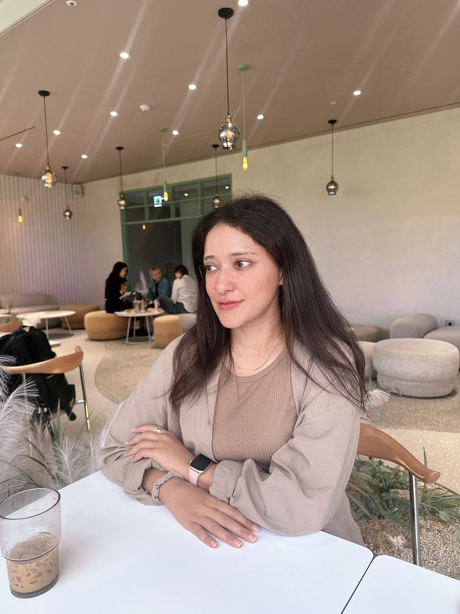
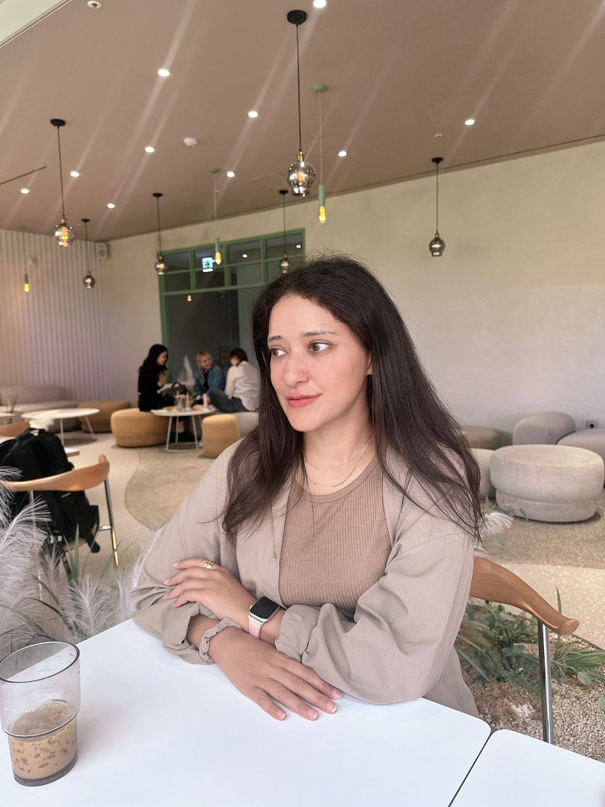

My Experience with Lip Fillers and Under-Eye Fillers for Dark Circles
Author:키란 / 학생 / 체육교육과 / Date:2024-11-07 20:41:19 / Views:910
I came across INFLO through their website and decided to sign up for their model program, not expecting much. To my surprise, they contacted me promptly and were extremely professional and understanding throughout the entire process. They made sure I felt heard, and my concerns were given priority. From finding the perfect doctor and clinic to ensuring I was okay after the procedure, INFLO took great care in making me feel at ease.
I underwent two treatments:
Dark circle correction
Lip fillers
Both treatments were handled with the utmost care. The doctor was thorough during the consultation, taking the time to listen to my preferences, and delivered exactly what I wanted — natural and subtle results. The procedure itself was painless, thanks to the numbing cream, and I’m extremely happy with the outcome!
After two weeks, I went back for a touch-up, and I am loving my new look! Dr. Kim Hyun Ok at Toxnfill Hongdae did an amazing job and made me feel very comfortable throughout the entire process. Their expertise and attention to detail truly exceeded my expectations.
A big thank you to Inflo for giving me this opportunity to experience Korea’s aesthetic and cosmetic treatments firsthand! ✨ I highly recommend Inflo for anyone looking for high-quality, professional aesthetic services in South Korea. 

 
